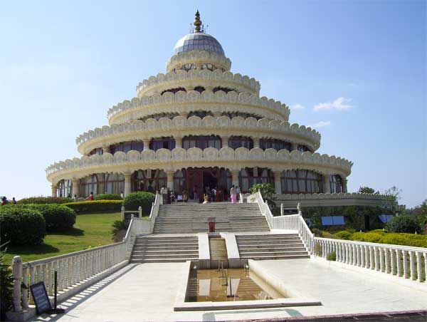
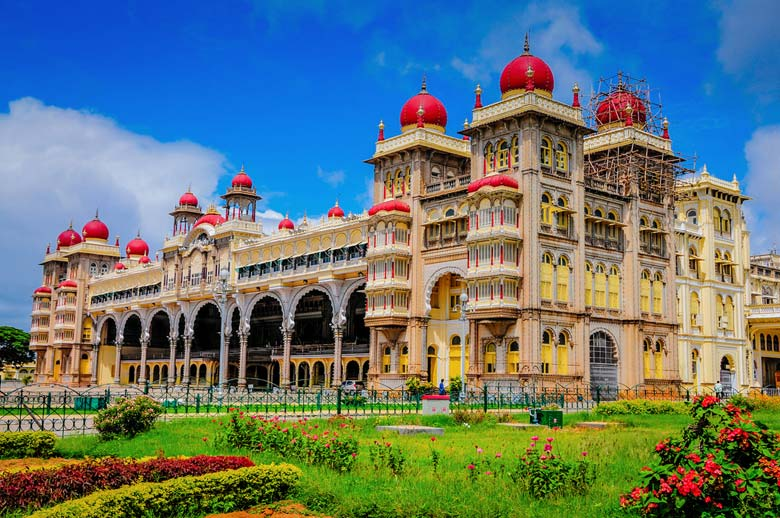
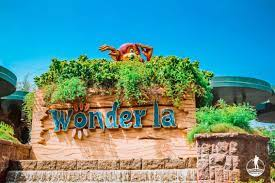
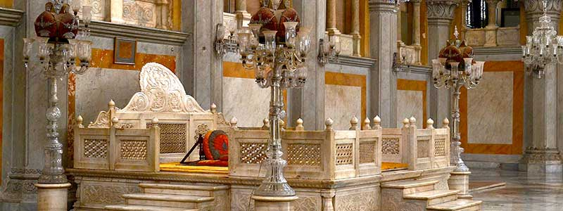
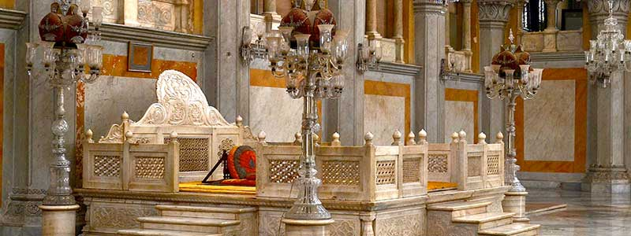
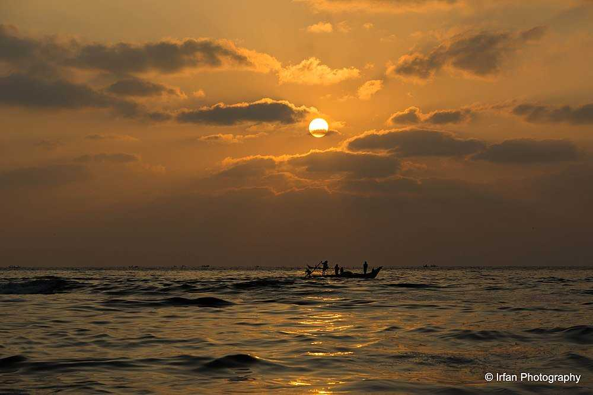
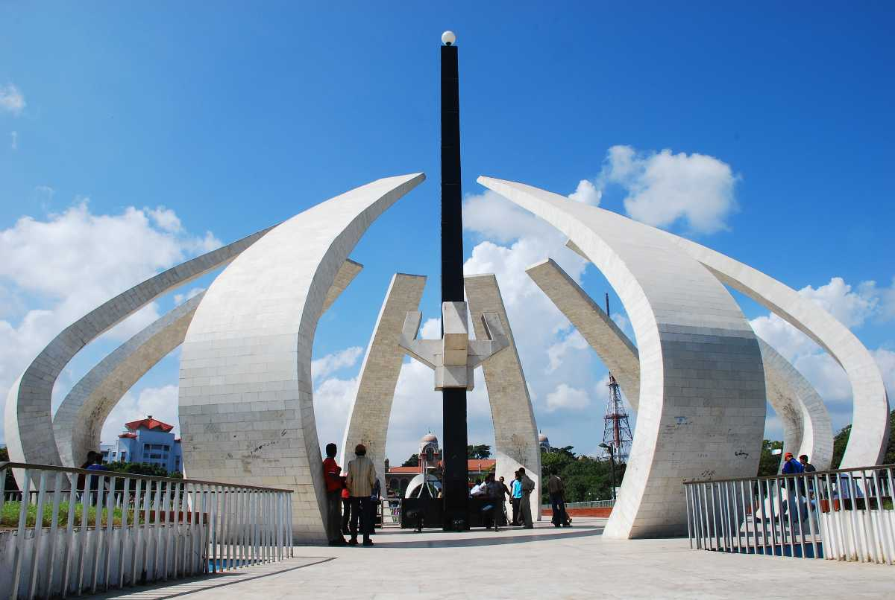
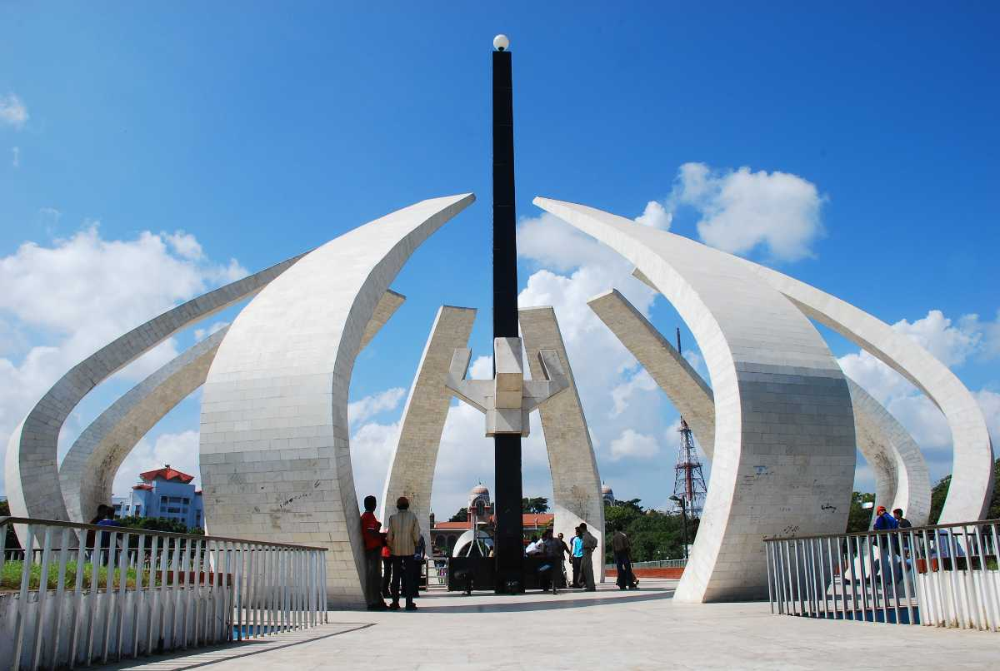
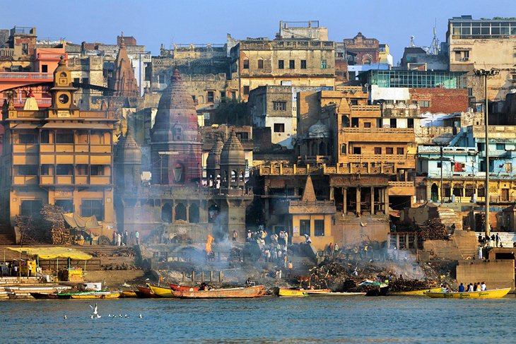
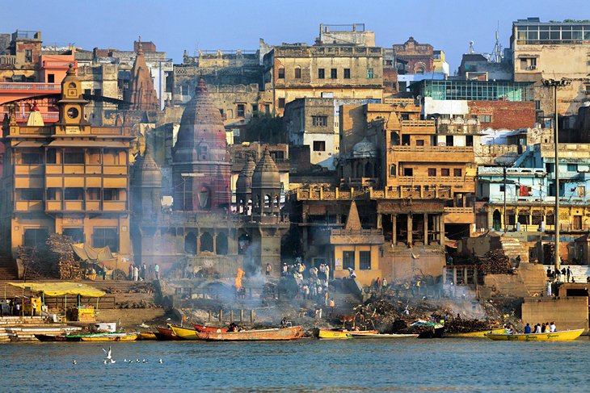

Must Visit Destination
Bengaluru
A city catering to almost all the creature comforts of a metropolitan, a pleasant year-round weather and a bustling shopping and culinary scene, Bengaluru, the capital of Karnataka, is the perfect destination to mix work with pleasure.
  
Hyderabad
A vibrant city with the imposing Charminar at its heart, Hyderabad, the capital of Telangana, is a potpourri of history, cuisine and eclectic experiences. While its Old City area is an impressive heritage haven with iconic monuments.


 

Kolkata
Almost like a colonial matriarch nurturing her heritage roots, the city of Kolkata, the capital of West Bengal, holds culture and tradition close to its heart.


Chennai
Ancient temples, vibrant arts, natural wonders and a bustling culinary scene make Chennai, the capital of Tamil Nadu, one of the most popular tourist destinations in the southern fringes of the country.

 

Varanasi
One of the oldest living inhabitations of the world, the sacred city of Varanasi or Benaras, nestled on the banks of the holy Ganges river, has been attracting pilgrims for centuries.

 
